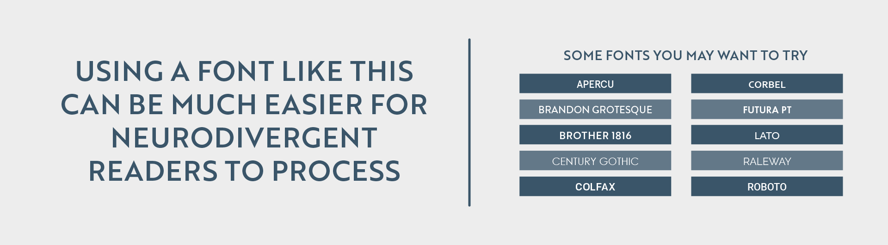

Designing for Neurodivergent Audiences
This article was first published in Nightingale on Feburary 8, 2022.
When a group of autistic individuals coined the term neurodiversity in an attempt to redefine their identity, few would accurately predict the impact it would have on design, education, and society as a whole. With this term, autistic individuals asserted their right to move beyond negative colloquialisms. More than a decade later, neurodiversity has become synonymous with those having neurological conditions such as behavior and emotional disorders, learning disabilities, ADHD, Asperger’s, and Autism. This umbrella term informs others to see those who are neurodiverse as having a “differently wired brain,” as opposed to being someone unable to fit into the model of social norms.
Data visualization artists are responsible for making large amounts of information easily accessible and digestible for a wide array of readers. This includes the 17 percent of the global population who have been diagnosed as neurodiverse, as reported by the Oxford University British Medical Bulletin. For those in this community, having a visual representation of data can be invaluable, but there are still ways to make data more accessible. Taking extra care to consider elements such as emphasis, balance, proportion, typography, and color can make a noticeable difference.
Here are a few guidelines designers should consider when creating visualizations to make them more accessible to neurodiverse readers, from a neurodivergent designer.
Typography
Font selection is one of the most important decisions a designer makes. It’s the key to ensuring the data you’re attempting to communicate is understood beyond your design. While it may be a go-to decision to select a font which looks professional, such as Times New Roman, research shows you may want to avoid serif fonts altogether when attempting to appeal to neurodiverse audiences.
Serif fonts can be identified by their tails and ticks on the ends of most strokes. While serif fonts like Times New Roman have been a standard for professional writing for decades, they have been found to be far less readable among neurodiverse audiences, according to the British Dyslexia Association. As an alternative, sans-serif fonts prove to be much easier to comprehend. While fonts resembling handwriting appeal to neurodiverse audiences, such as Comic Sans, there is limited usage for them in the vast majority of data visualization projects. Sans-serif fonts continue to offer multiple variations to add dimension to your design, where using different weights and sizes can make for a visually interesting piece.
Image credit: William Careri.
Color
Color can be a data visualization artist’s best friend, offering an easy way to divide information and adding variables to a chart or dashboard. While it is both reasonable and natural to feel the need to use drastically different colors to differentiate areas, it can be overstimulating for a large percentage of people with dyslexia who suffer from Scotopic Sensitivity Syndrome, according to the National Library of Medicine. This is where the usage of single-hue scales can be a perfect solution.
Single-hue color scales limit the number of hues in use while still providing plenty of variations. While this won’t work for projects breaking down a large number of variables where color is your only option for variation, it surely has its place in many others.
Selecting a background color is also crucial for contrast. A designer should not overlay two highly contrasted colors on top of each other, causing an unpleasant viewing experience for those who are neurodivergent. For many neurodivergent audiences, there is a preference for muted and pastel hues and neutral tones.This may mean a matte-black background with two-to-three pastel hues to depict data, or a neutral tan, gray or white background, to prevent colors from overwhelming the reader.
![A horizontal image split into two sections. The top section features text in a dark blue sans-serif font against a light gray background. The text reads: 'SINGLE HUE SCALES CAN MINIMIZE HIGH CONTRAST, WHICH CAN BE OVERSTIMULATING FOR THOSE WHO ARE NEURODIVERGENT'. Below the text is a grid of twelve vertical rectangles. The top row of six rectangles transitions in color from dark teal on the left to a light pastel blue on the right, demonstrating a single hue scale. The bottom row of six rectangles transitions from a dark coral red on the left to a light pastel pink on the right, also demonstrating a single hue scale. The background of the entire image is a light gray.](../assets/images/portfolio/designing-for-neurodivergent-2.png)
Image credit: William Careri.
Visual hierarchy
Having a clear path for a reader to follow is essential among neurodiverse audiences. When looking at the project as a whole, it should allow for the eyes to follow a path to easily find the title, description, primary graphic, and key. This greatly aids comprehension, ensuring information isn’t overlooked, nor is a strain to find.
Another way to ensure your project has an effective visual hierarchy is to break up large bodies of text with visual elements. When there are too many large blocks of text, it can be overwhelming and harder for neurodiverse audiences to comprehend. Breaking up the text into smaller, more digestible pieces will considerably increase comprehension.
A visual hierarchy ensures balance in our work; by using an even amount of symmetry or asymmetry, a strong visual stability is enforced.
![A horizontal image split into two sections. The left section features a collection of small, geometric line-art style illustrations in a dark blue color against a light gray background. These illustrations include a cylinder, a cone, a cube, a diamond shape, a book, a droplet, a stack of triangles, a series of chevron arrows, and other abstract shapes and patterns. The illustrations are scattered randomly across the left side. The right section contains text in a dark blue sans-serif font against a light gray background. The text reads: 'A PROPER MIX OF TEXT AND IMAGES ENSURE A VISUAL HIERARCHY, MAKING IT EASIER TO PROCESS'. The background of the entire image is a light gray.](../assets/images/portfolio/designing-for-neurodivergent-3.png)
Image credit: William Careri.
Patterns
The use of patterns, both organic and geometric, appeases a neurodivergent audiences’ need for predictability and repetition, according to a study conducted by the Association for Psychological Science. This technique is known as fractals structures, and while they naturally help the neurodivergent understand, manage, and navigate the world, when used in data visualization projects, patterns can improve understanding, management, and navigation of large amounts of information. These patterns, while still used in moderation to avoid overstimulation, can add another element to visual storytelling efforts.
Many of those who are neurodivergent depend on repetition and predictability to feel in control and comfortable with what they’re attempting to comprehend. Having a pattern combined with a well-executed visual hierarchy can keep a reader who is neurodiverse more engaged.
![A horizontal image featuring two rows of repeating patterns with text in the center. The background of the image is a light gray. The top row shows eight distinct geometric patterns, each in a dark blue line art style. These patterns include grids, squares, hexagons, diamonds, and chevron shapes. The center of the image contains text in a dark blue sans-serif font. The text reads: 'ORGANIC AND GEOMETRIC PATTERNS CAN BE EXTREMELY USEFUL BECAUSE THEY'RE PREDICTABLE – EMBRACING FRACTALS STRUCTURES'. The bottom row mirrors the top row, displaying eight different geometric patterns, also in a dark blue line art style. These patterns include squares, diamonds, and triangular grids. The patterns in both rows are distinct and repeat horizontally across the image.](../assets/images/portfolio/designing-for-neurodivergent-4.png)
Image credit: William Careri.
Data visualization artists are storytellers with the unique ability to take information that requires skills – and patience – to dissect and turn it into beautiful designs. By designing data visualization projects to accommodate a variety of neurodivergent disorders, dataviz practitioners only further ensure our work is more accessible for all.